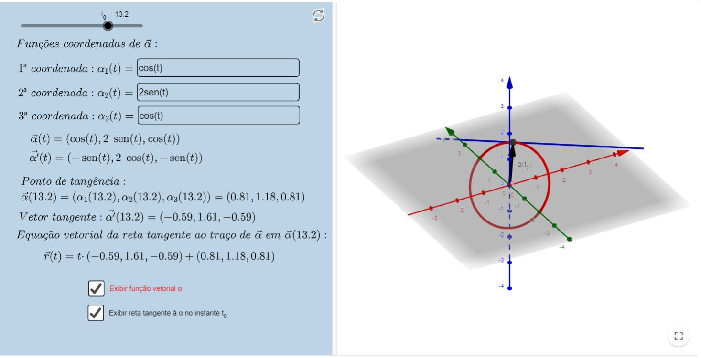

Funções vetoriais de uma variável real
Derivabilidade
Derivada - Definição
Considere a função $F: D \subseteq \mathbb{R} \longrightarrow \mathbb{R}^{m}$ e seja $t_{0} \in I$ (aberto) $\subseteq D$. Dizemos que $F$ é
derivável em $t_{0}$, se
$$
\lim _{h \rightarrow 0} \frac{F\left(t_{0}+h\right)-F\left(t_{0}\right)}{h}
$$
existe. Neste caso, definimos a derivada de $F$ em $t_{0}$, denotada por $F^{\prime}\left(t_{0}\right)$ ou $\frac{d F}{d t}\left(t_{0}\right)$,
como sendo o valor deste limite.
Sendo assim, temos que:
" $F$ é derivável em $t_{0}$ se e somente se suas funções coordenadas são deriváveis em $t_{0}$ e, neste caso,
$F^{\prime}\left(t_{0}\right)=\left(f_{1}^{\prime}\left(t_{0}\right), f_{2}^{\prime}\left(t_{0}\right), \ldots, f_{m}^{\prime}\left(t_{0}\right)\right)$ "
Logo abaixo, há um exemplo de interpretação geométrica da derivada de uma função vetorial $\vec{r}$. Deslize os parâmetros $h$ e $t_{0}$ para ver o que
acontece com o vetor $\vec{r}\left(t_{0}+h\right)-\vec{r}\left(t_{0}\right)$ e com o vetor $\frac{\vec{r}\left(t_{0}+h\right)-\vec{r}\left(t_{0}\right)}{h}$,
que é um múltiplo escalar do vetor anteriormente mencionado. Ao fazermos $h \rightarrow 0$, observamos que esse vetor se aproxima de um vetor sobre a reta tangente
à curva $C$ em questão no ponto $\vec{r}\left(t_{0}\right)$. Por esta razão, $\vec{r}^{\prime}\left(t_{0}\right)$ é chamado de vetor tangente à curva $C$, parametrizada por $\vec{r}$ no
ponto $r\left(t_{0}\right)$. Mais para frente será apresentado o conceito formal de reta tangente à uma curva.
Exemplos de curvas no plano
Observe no recurso abaixo, alguns exemplos de curvas no plano. Deslize o parâmetro $t$ e verifique o que acontece com o vetor tangente à curva.
Para uma melhor visualização, selecione UMA caixa de cada vez.
Em particular, na curva 1 há um fenômeno interessante de se observar. Perceba que o vetor tangente em $t=0$ é o vetor nulo. Porém, isso não significa
que a função não é diferenciável em $t=0$. Na realidade, ela é diferenciável (note que suas coordenadas são funções diferenciáveis). Isso parece
conflitar com o que vemos em Cálculo 1 , por exemplo na função $y=|x|$, onde há um "bico", certo? Só que aqui o cenário é outro: o que estamos vendo
é o traço da função definida de $\mathbb{R} \rightarrow \mathbb{R}^{2}$ e o que vemos em Cálculo 1 é o gráfico de uma função definida de $\mathbb{R} \rightarrow \mathbb{R}$.
Quando falamos de diferenciabilidade, estamos interessados em como se comporta o gráfico da função, não o traço dela, por isso há tal diferença: para a
diferenciabilidade de uma função vetorial, pouco importa se o traço contém "bicos/quinas" ou não, desde que o gráfico da mesma seja uma curva suave,
a função será diferenciável. Pode-se pensar também que o vetor tangente chega no ponto $(0,0)$ e o deixa com velocidade nula, o que faz com que a
função vetorial seja diferenciável em 0 .
Ver seção $13.2$ pág. 767 do livro Cálculo, Vol. 2, James Stewart, Cengage Learning, $7 a$. edição, $2013 .$
Retan tangente - Definição
Seja $\vec{r}$ uma função contínua e injetora. Dado um ponto $\vec{r}\left(t_{0}\right) \in C$, onde $C$ é a curva parametrizada por $\vec{r}$ no plano,
se $\vec{r}^{\prime}\left(t_{0}\right)$ existe e é não nulo, as equações paramétricas da reta tangente à curva $C$ no ponto
$\vec{r}^{\prime}\left(t_{0}\right)$ são dadas por:
$$
(x, y)=\vec{r}\left(t_{0}\right)+t \vec{r}^{\prime}\left(t_{0}\right), t \in \mathbb{R}
$$
Se $C$ é uma curva no espaço, as equações paramétricas da reta tangente nas mesmas condições serão:
$$
(x, y, z)=\vec{r}\left(t_{0}\right)+t \vec{r}^{\prime}\left(t_{0}\right), t \in \mathbb{R}
$$
Há um recurso abaixo no qual você pode determinar a curva com a qual quer trabalhar. Você poderá definir o valor de $t_{0}$ para o qual deseja calcular
a reta tangente. (O recurso abaixo em particular foi feito pelo aluno Raphael Brandão)
Recursos computacionais
interpretação geométrica da derivada no plano
Livro Geogebra
interpretação geométrica da derivada no espaço
Livro Geogebra
Exemplos de curvas no plano
Livro Geogebra
Exemplos de curvas no espaço I
Livro Geogebra
Exemplos de curvas no espaço II
Livro Geogebra
Exemplos de curvas no espaço III
Livro Geogebra
Reta tangente
Livro Geogebra
